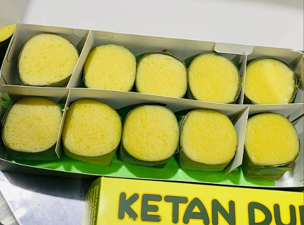

Teknik Komputer
Tentang saya
Saya mahasiswa aktif program studi Teknik Komputer. Saya mampu bekerja dengan baik secara individu maupun dalam tim, mudah beradaptasi dengan lingkungan baru, jujur, bertanggung jawab, dan memiliki manajemen waktu yang baik. Saya juga pernah aktif di OSIS sebagai bendahara.
Pendidikan
Teknik Komputer dan Jaringan (TKJ)
Pengalaman
Giga Computer
- Melayani pelanggan dan menerima keluhan mereka.
- Membantu pemasangan Wi-Fi dan CCTV sesuai kebutuhan pelanggan.
- Membantu servis dan pengecekan kerusakan barang elektronik.
- Instal ulang Windows dan memasang aplikasi standar pada PC dan laptop.
Ketan Duren
- Memproduksi aneka jajanan dan oleh-oleh berbahan dasar durian sesuai standar takaran, cita rasa, dan kualitas toko.
- Menjaga kebersihan, sanitasi peralatan, dan kerapian dapur sesuai prosedur keamanan pangan.

Organisasi
Organisasi Siswa Intra Sekolah (OSIS)
- Mengelola Rencana Anggaran Biaya (RAB) agar penggunaan dana sesuai kebutuhan kegiatan.
- Mencatat pemasukan dan pengeluaran dana secara teliti dan terstruktur.
- Menyusun laporan keuangan yang rapi, transparan, dan jujur.
- Membantu menyusun agenda agar kegiatan berjalan sesuai jadwal.
- Membantu koordinasi dengan anggota tim untuk kelancaran acara.
Skill
Hardware dan jaringan
- Merakit dan membongkar PC/laptop
- Crimping kabel LAN
- IoT Fundamental
Software dan tools
- Instal ulang Windows
- Microsoft Word
- Microsoft Excel
- Pemanfaatan AI tools
Soft skill
- Mudah beradaptasi
- Kerja tim dan individu
- Komunikatif
- Bertanggung jawab
- Manajemen waktu
Kontak
Email
gavinardian11@gmail.com
Telepon / WhatsApp
+62 856-0752-3133